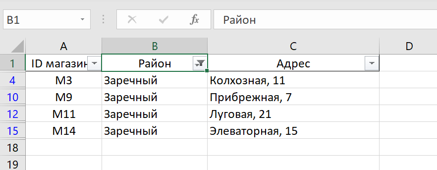
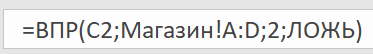
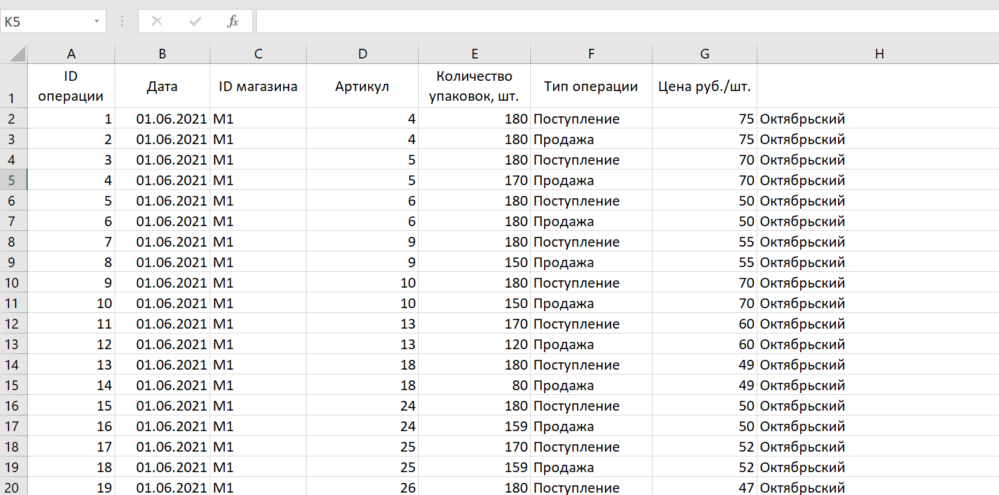
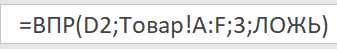
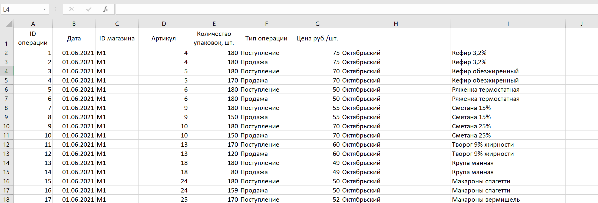
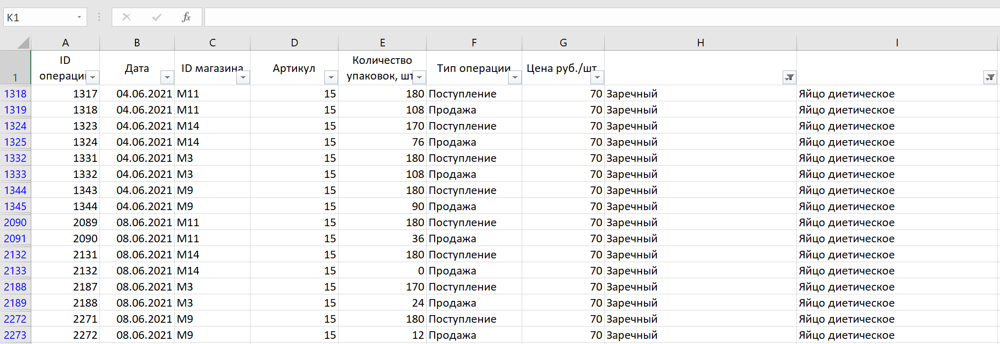
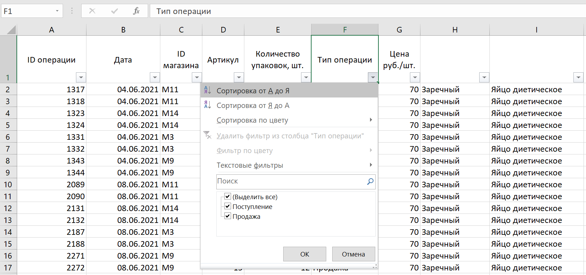
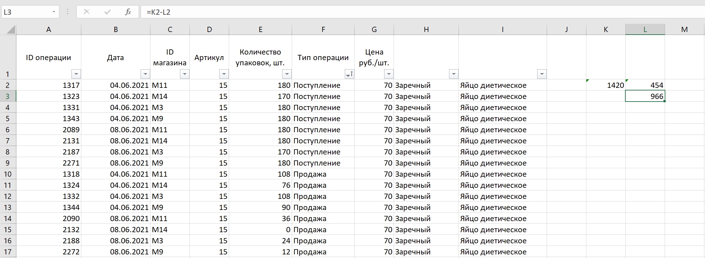

Задание №1
В файле приведён фрагмент базы данных «Продукты» о поставках товаров в магазины районов города. База данных состоит из трёх таблиц. Таблица «Движение товаров» содержит записи о поставках товаров в магазины в течение первой декады июня 2021 г., а также информацию о проданных товарах. Поле Тип операции содержит значение Поступление или Продажа, а в соответствующее поле Количество упаковок, шт. занесена информация о том, сколько упаковок товара поступило в магазин или было продано в течение дня. Таблица «Товар» содержит информацию об основных характеристиках каждого товара. Таблица «Магазин» содержит информацию о местонахождении магазинов.
Используя информацию из приведённой базы данных, определите на сколько увеличилось количество упаковок яиц диетических, имеющихся в наличии в магазинах Заречного района, за период с 1 по 10 июня включительно. В ответе запишите только число. |
Скачать файл
Решение:
- Чтобы решить эту задачу максимально точно, нам понадобится связать некоторые элементы из наших трёх таблиц. Нас интересуют лишь магазины заречного района, поэтому в третьей таблице ставим фильтр на этот район: Сортировка и фильтр→Фильтр→Нажимаем на столбец "Район"→Ставим галочку на "Заречный" и убираем другие галочки.

Нам необходимо связать ID магазина в первой и в третьей таблице, для этого используем комаду ВПР.

"C2"-ячейка первой таблицы, которую связываем с третьей таблицей;
"Магазин!A:D"-название листа третьей таблицы!диапазон этой таблицы;
"2"-номер столбца третьей таблицы, который нужно связать с первой (столбец B);
"Ложь"-условие, при котором не берётся ничего лишнего.
Растягиваем формулу на протяжении всей таблицы.

- Теперь необходимо связать ID товара первой таблицы и ID товара второй таблицы. Используем так же команду ВПР.

"D2"-ячейка первой таблицы, которую связываем со второй таблицей;
"Товар!A:F"-название листа второй таблицы!диапазон этой таблицы;
"3"-номер столбца второй таблицы, который нужно связать с первой (столбец C);
"Ложь"-условие, при котором не берётся ничего лишнего. Здесь всё так же, как и с первым случаем.
Теперь растягиваем формулу на всю таблицу.

- Теперь нам остаётся поработать с фильтром. Нас просят выбрать дату с 1 по 10 июня, магазины заречного района и яйца диетические. Ставим галочки в соответствующих ячейках и получаем подобную таблицу

Нас просят найти разность между количеством полученных товаров и количеством проданных. Для этого необходимо перенести получившуюся таблицу на отдельный лист, иначе команда СУММ будет считать элементы всей таблицы, а не получившейся. Также советую сделать подобный фильтр на столбец с операцией.

Теперь просто считаем сумму полученных и вычитаем из неё сумму проданных, и получаем ответ.

Ответ: 966
Назад |